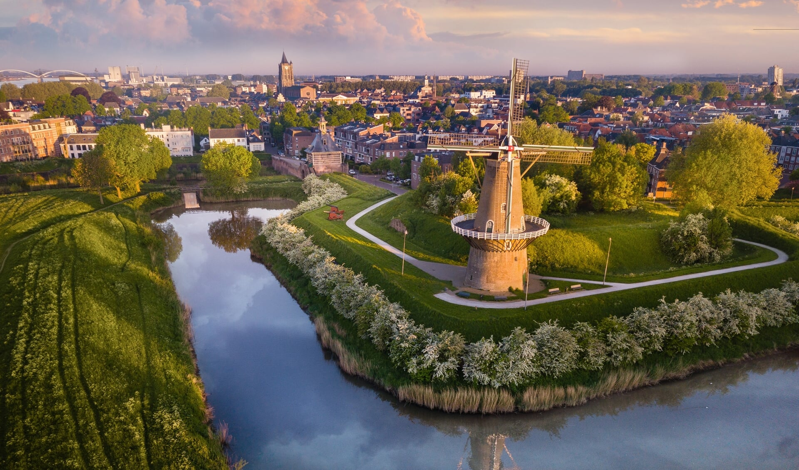
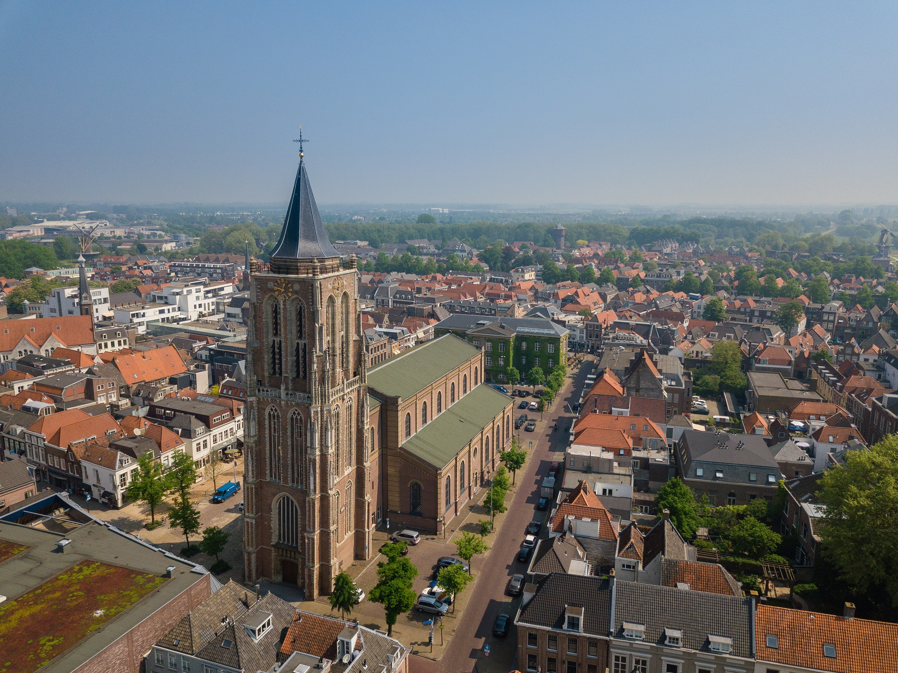

Gorinchem, Woudrichem, Slot Loevestein en Fort Vuren vormen samen de Vestingdriehoek. Met een wandeling langs de vestingwallen ontdek je oude kanonnen en de molens “Nooit Volmaakt” en “De Hoop”. Gorinchem heeft een historisch stadscentrum met als trekpleister de Oude Markt met gezellige terrasjes. Met de veerdienst kan je een ronde maken langs de hele vestingdriehoek.
Gorinchem maakte als vestingstad onderdeel uit van zowel de Oude als de Nieuwe Hollandse Waterlinie. Samen met het tegenoverliggende Woudrichem zorgde deze vesting voor de afsluiting van de rivier de Waal voor de vijand. Er bevonden zich in de stad kazernes, artillerieloodsen en veel andere gebouwen met een militaire bestemming. Een deel hiervan is bewaard gebleven. Door de vele monumentale panden, de zestiende-eeuwse stadswallen en de prachtige stadspoort is de historie overal in de binnenstad zichtbaar en tastbaar.

De Grote Toren zie je al van ver. Het is dan ook het meest opvallende gebouw in de vesting. Nog leuker is zelf de toren beklimmen en het onvergetelijke uitzicht ervaren.
Deze laat-middeleeuwse toren hoorde in 1572 natuurlijk bij de katholieke St. Maartenskerk. Die is tijdens het beleg van 1813/1814 zo zwaar beschadigd dat het werd afgebroken. Nu staat er een 19e eeuws kerkgebouw; de Grote Kerk. De toren wordt nu de Grote Toren genoemd. En groot is de toren nog steeds, om niet te zeggen grots! Halverwege het kerkgebouw, aan de zijde van het Zusterhuis, zou vroeger een ondergrondse gang hebben gelopen naar het Agnietenklooster, zodat de zusters ongezien naar de kerk konden gaan. Maar dit verhaal is nooit aangetoond.